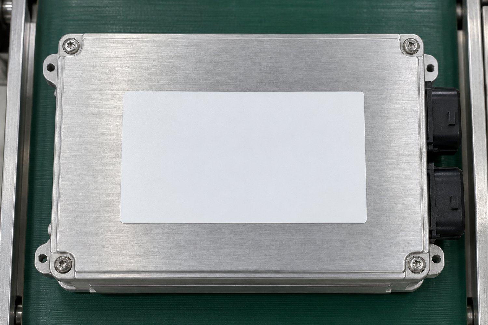

Zdrojový kód
Prohlédněte si implementaci Studia, runtime, CLI, kontraktů a adaptérů v repozitáři.
Otevřít GitHub PLATFORMO projektu ›
PLATFORMO projektu ›VoiceVision Platform je softwarový projekt pro přípravu úloh strojového vidění a práci se zařízeními více výrobců. Zdrojový kód, technické podklady a vývoj jsou dostupné veřejně.
Prohlédněte si implementaci Studia, runtime, CLI, kontraktů a adaptérů v repozitáři.
Otevřít GitHubArchitektura, rychlý start, stav a ověřovací záznamy drží kontext implementace.
Procházet dokumentaciNahlaste chybu nebo otevřete diskusi k projektu prostřednictvím GitHub Issues.
Otevřít Issues
VVP udržuje zdrojový kód, dokumentaci a stav projektu společně. Každá integrační cesta má své podklady a známé hranice; obecné tvrzení o podpoře výrobce nenahrazuje konkrétní ověřovací záznam.
Příspěvky, hlášení problémů i návrhy změn se spravují ve veřejném repozitáři. Před otevřením issue zkontrolujte, zda projekt neobsahuje podobné téma.
Technické podkladyVVP rozděluje pracovní postup na srozumitelné části. U každého kroku záleží na zdroji dat, vybraném nástroji a potvrzení, které skutečně vrátí runtime nebo zařízení.
Přejděte na zdrojový kód nebo vyberte část platformy, která vás zajímá.